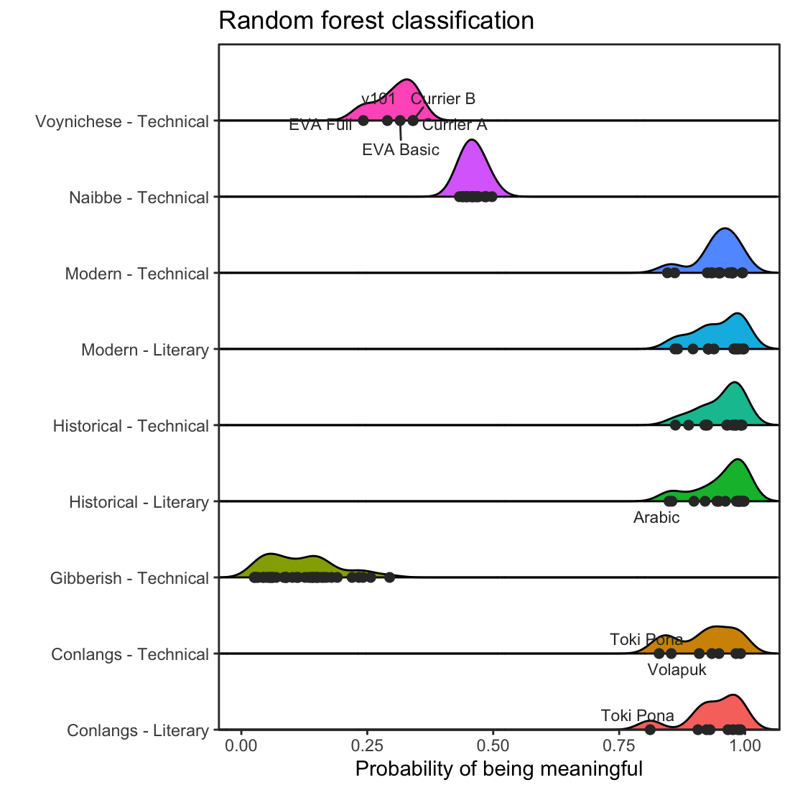

Projects
Cross-Domain
A pipeline for formalising scientific publications into unified formal structures and connecting papers across fields — medicine, physics, engineering — to surface answers that no single field has found alone.

Language Evolution Simulator
Agents evolve communication from scratch with no designed phonology or grammar. Currently yields a fully compositional language: ~50-word lexicon, four emergent grammatical categories, evidentiality, tense, 86% role-decoding accuracy.

Voynich Decode Project
Reproduced all measured structural properties of the Voynich Manuscript via a ~200-unit combinatorial generative procedure requiring no semantic content, statistically falsifying the cipher hypothesis.
Pokémon Ecosystem Simulator
1,000+ Pokémon species placed in a world of biomes with ecologically-derived traits from real game data. Predator–prey cycles, population crashes, and long-run equilibria emerge without any scripting of specific interactions.